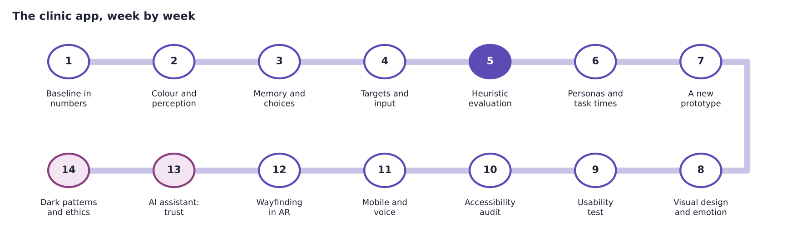
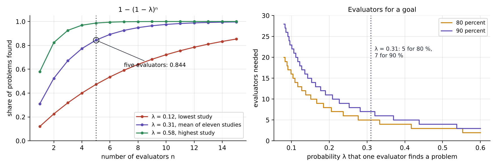
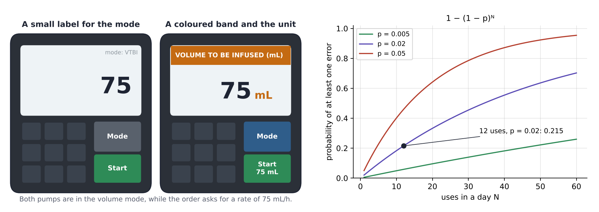
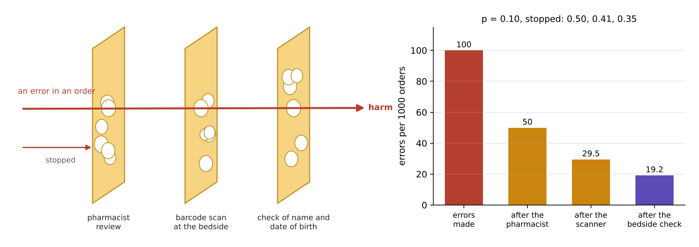
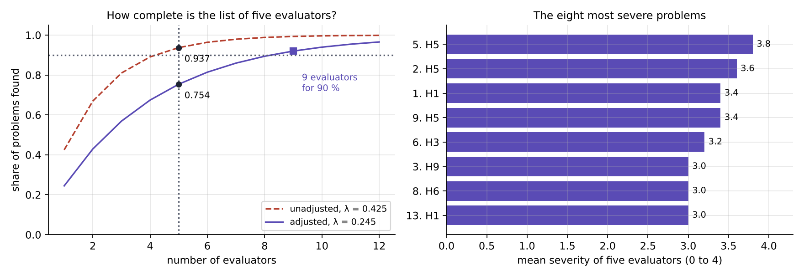

Overview
Weeks 2 to 4 measured the human: Eyes, attention, memory and hands. This week turns to the interface as a whole and asks how to find its problems before patients do. A heuristic evaluation lets a few evaluators inspect an interface against ten rules of thumb. A model of discovery tells how many evaluators a team needs, and an adjustment corrects the estimate of small teams. The second half of the week studies human error: Slips, lapses, mistakes and the mode errors of devices with several modes. Errors cannot be abolished, so hospitals stack defences in layers, and the week computes how many errors pass all of them. The clinic app reaches stage 5, a heuristic evaluation with a ranked list of problems. The week closes with guidelines for artificial intelligence (AI) that make its errors easy to notice and to correct.
Week at a glance
flowchart LR A["From principles to heuristics"] --> B["Heuristic evaluation"] B --> C["How many evaluators?"] C --> D["Slips, mistakes and modes"] D --> E["Defences in layers"] E --> F["Interface clinic"] F --> G["The human side"] G --> S["The clinic app, stage 5"] S --> H["Toward human-AI interaction"]
Every method on this page is also written as Python code in the Colab notebook of the week. Its code is divided into numbered sections. Each orange box on this page names the section whose code carries out what the text above the box explains. The box says what to run and what to look at in that section, and its button opens the Colab notebook at that place. The games, the practice parts and the self-assessment of the week are in the interactive lab. Each violet box opens one part of the interactive lab. The part ends with a link back to its box on this page, and the Colab notebook is always opened from the orange boxes here.
Python step 5: Matrices of zeros and ones
Python code in the Colab notebook, right after Section 0 (setup). Open the Colab notebook and run this step cell by cell: It consists of short pieces of Python code with their explanations, a quick check and three exercises. Topics: A matrix of who found what · Sums along rows and columns · The first evaluators and the problems they find together · Sorting a table by several columns.
The step continues with Python [1] and NumPy [2]. It builds a matrix with one row for each evaluator and one column for each problem. It sums the matrix along its rows and columns and follows how the found problems add up as evaluators join. It ends by sorting a table of problems by severity. Students who have never programmed start with the start-here notebook of the course.
Week 1 measured the booking flow, and Week 2 audited colours, contrast and text size. Week 3 chose a split menu of departments, and Week 4 widened the time chips to 12 mm and replaced the slide to confirm.
This week inspects the whole app. Stage 5 ranks the problems that five evaluators found and estimates how many they missed.

From principles to heuristics
Week 1 introduced the principles of Norman: Affordances and signifiers show what can be done, mappings tie controls to their effects, and feedback shows the result [3]. The principles explain why a design works, and they bridge the gulfs of execution and evaluation of the interaction loop. They do not yet tell an inspector what to look for on a given screen.
A heuristic is a rule of thumb that turns such principles into a question for an inspector. Each heuristic of this week checks ideas of the earlier weeks, as the table shows.
| Idea from an earlier week | Heuristic that checks it |
|---|---|
| Feedback and the gulf of evaluation (Week 1) | H1 Visibility of system status |
| The conceptual model of the user (Week 1) | H2 Match between the system and the real world |
| Constraints that block wrong actions (Week 1) | H5 Error prevention |
| Contrast, size and clutter (Week 2) | H8 Aesthetic and minimalist design |
| Recognition instead of recall (Week 3) | H6 Recognition rather than recall |
| Frequent choices first (Week 3) | H7 Flexibility and efficiency of use |
Check your understanding. What does a heuristic add to a principle such as feedback?
Heuristic evaluation
Nielsen and Molich proposed heuristic evaluation: A few evaluators inspect an interface and judge it against a short list of usability principles [4]. Nielsen later explained a database of 249 usability problems from 11 projects with 101 candidate principles [5]. A factor analysis showed which principles explained the most problems, and the list of ten below grew out of it [6].
| Heuristic | Question for the inspector |
|---|---|
| H1 Visibility of system status | Does the screen show what the system is doing, in time? |
| H2 Match between the system and the real world | Does it use the words and order of the users? |
| H3 User control and freedom | Can users leave, go back and undo? |
| H4 Consistency and standards | Do the same words and actions always mean the same? |
| H5 Error prevention | Does the design make errors hard to make? |
| H6 Recognition rather than recall | Is what users need visible, instead of remembered? |
| H7 Flexibility and efficiency of use | Are there shortcuts for frequent tasks? |
| H8 Aesthetic and minimalist design | Does every element on the screen earn its place? |
| H9 Help users recognize, diagnose and recover from errors | Do error messages name the cause and a fix? |
| H10 Help and documentation | Is help easy to find and focused on tasks? |
Each evaluator inspects the interface alone, usually twice: Once to learn the flow and once to examine every element. The lists of all evaluators are then merged, and each problem receives a severity rating on a scale from 0 to 4 [6]. A rating of 0 means that the evaluator does not see a usability problem. The ratings 1 to 4 mark a cosmetic, a minor and a major problem and a catastrophe that must be fixed first. Severity combines how often the problem occurs, how badly it hurts and whether users can learn to avoid it.
Evaluators find surprisingly different problems. Hertzum and Jacobsen reviewed eleven studies and found that the average agreement between two evaluators ranged from 5 to 65 percent [7]. The agreement of two evaluators \(i\) and \(j\) is the share of the problems found by either that both found:
\(P_i\) is the set of problems found by evaluator \(i\), \(\cap\) keeps the problems in both sets, \(\cup\) the problems in either, and \(|\cdot|\) counts them. The agreement lies between 0, for no common problem, and 1, for two identical lists.
A worked example. Evaluator 1 found the problems 1, 2, 5 and 8 of a booking screen, and evaluator 2 found 2, 5 and 9. Both found 2 and 5, and together they found 1, 2, 5, 8 and 9. So \(A_{12} = 2/5 = 0.40\). The five severity ratings 4, 4, 3, 4 and 3 of one problem give the mean \((4 + 4 + 3 + 4 + 3)/5 = 18/5 = 3.6\). That is a major problem.
Check your understanding. Two evaluators found the problems {1, 3, 6} and {3, 6}. What is their agreement?
Part A of the interactive lab makes you an evaluator. The check-in kiosk of the lobby shows a booking screen with ten problems, one for each heuristic, among elements that work well. Your finds become one row of the matrix of a class in Section 1.
Interactive lab, Part A. Heuristic hunt in 3D: Four minutes to find ten problems on a kiosk screen, with a severity rating for each find. The results can be copied into the Colab notebook.
Python code in the Colab notebook, Section 1. Open Section 1 of the Colab notebook and run it. The functions agreement and mean_agreement carry out the formula of this section and are checked on the worked example. The code ranks the sixteen problems of the clinic app by their mean severity. Paste the results of Part A into MY_HUNT, and the code adds your finds to eleven simulated classmates. A figure shows which problems the class found.
- Pick an app on your phone and find one problem for three of the heuristics. Which heuristic was the hardest to apply?
- Rate the severity of your three problems. Would a classmate give the same ratings?
How many evaluators?
In four experiments of Nielsen and Molich, single evaluators found only 20 to 51 percent of the problems [4]. Lists merged from three to five evaluators did much better. Nielsen and Landauer described this with a simple model [8]. If every evaluator finds a problem with the same probability \(\lambda\), a problem stays unfound only when all evaluators miss it:
The symbol \(n\) is the number of evaluators and \(\mathrm{Found}(n)\) the expected share of all problems that they find. The number of evaluators for a goal share \(g\) is \(n_g\), rounded up to a whole number. In the eleven studies of Nielsen and Landauer, \(\lambda\) ranged from 0.12 to 0.58, and their examples use the mean of 0.31.
→ These formulas with numbers, step by step: Lab Part B, calculator, steps 1 to 5.
A worked example. With \(\lambda = 0.31\), one evaluator misses a problem with the probability \(1 - 0.31 = 0.69\). Five evaluators all miss it with \(0.69^5 = 0.156\), so they find \(1 - 0.156 = 0.844\) of the problems. For 90 percent, \(n_g \)\({}= \ln 0.1 / \ln 0.69 \)\({}= -2.303 / \)\({}-0.371 \)\({}= 6.21\), rounded up to 7 evaluators.
Animation. Twelve evaluators inspect an interface with twenty problems, one after the other. Each dot in a row is a problem that this evaluator found, and the top row marks every problem found so far. The slider sets the probability \(\lambda\), and Play runs a new evaluation. The right panel compares the share found with the model, the dashed line.
The probability \(\lambda\) must itself be estimated from a matrix of who found what. Its mean over all cells is too high when the team is small, because the problems that nobody found are missing from the matrix [9]. Lewis therefore averaged two corrections, one for the number of evaluators and one for the problems found only once:
\(\lambda_{est}\) is the share of ones in the matrix of \(n\) evaluators and the problems they found. \(GT_{adj}\) is the share of those problems that exactly one evaluator found. The name refers to the discounting of Good and Turing, which reserves probability for events not yet seen.

Check your understanding. Why does a small team overestimate \(\lambda\)?
Interactive lab, Part B. The discovery curve step by step: The share of problems found by \(n\) evaluators and the number of evaluators for a goal, with three presets.
Python code in the Colab notebook, Section 2. Open Section 2 of the Colab notebook and run it. The functions found_share, evaluators_for and lewis_adjust carry out the formulas of this section and are checked on the worked example. The code estimates \(\lambda\) from the class of Section 1, once from all twelve evaluators and once from the first three with the adjustment. A figure compares the estimates with the observed discovery, and the Explore panel draws the curve for any \(\lambda\).
Human error: Slips, lapses, mistakes and modes
Reason defined an error as a planned action that fails to reach its goal without the intervention of chance [10]. He separated errors by the stage at which they arise, and the table adds examples from a hospital ward.
| Type | What fails | Example on the ward |
|---|---|---|
| Slip | The action, while the intention was right | Tapping the time next to the intended one |
| Lapse | Memory, so a step is left out | Forgetting to restart a pump after changing the bag |
| Mistake, rule-based | A good rule is applied in the wrong situation | Giving the usual dose to a child |
| Mistake, knowledge-based | Reasoning in a new situation | Misreading a new kind of monitor |
| Violation | A rule is broken on purpose | Skipping the scan of a wristband to save time |
Slips are the errors of experts, because they arise from skilled, automatic actions. Norman described two kinds that interfaces invite [3]. A description-similarity slip acts on the wrong one of two similar objects, such as two drugs with similar names. A mode error happens when a device does different things in different modes and the user believes it is in another mode than it is.
A ward repeats each action many times a day, so even a small error rate adds up. With an error rate \(p\) per use and \(N\) uses, the expected number of errors and the probability of at least one error are
\(E\) counts errors and has no unit, and \(p\) is the probability of an error in one use. The second formula assumes independent uses: An error in one use does not change the chance of an error in the next.
A worked example. Suppose that nurses on a ward program infusion pumps 12 times a day, and that each programming ends in a mode error with the probability \(p = 0.02\). In a year, \(E = 12 \times 365 \times 0.02 = 87.6\) mode errors. On a single day, \(P = 1 - 0.98^{12} = 1 - 0.785 = 0.215\), so about one day in five has at least one.

Check your understanding. A nurse who usually gives an adult dose gives the same dose to a child. Which type of error is it?
Part C of the interactive lab puts you at the bedside. The infusion pump keeps the mode of its previous user, and each order asks for a rate. One block uses a pump that shows its mode in a small label, and the other a pump that shows it in a coloured band.
Interactive lab, Part C. The infusion pump in 3D: Twenty orders on a pump with two modes, in two designs. The results can be copied into the Colab notebook.
Python code in the Colab notebook, Section 3. Open Section 3 of the Colab notebook and run it. The functions expected_errors and p_at_least_one carry out the formulas of this section and are checked on the worked example. Paste the results of Part C into MY_PUMP, and the code computes the mode errors of each design. It turns them into errors per year and into the probability of at least one error a day, and a figure shows both.
- Name a device with modes that has surprised you, such as caps lock or a car key. How did you notice the mode?
- Is it better to remove a mode or to show it more clearly? Find an example of each.
Defences in layers: The Swiss cheese model
Reason contrasted two views of error [11]. The person approach blames the individual who made the error. The system approach accepts that people err and asks why the defences did not stop the error. In his Swiss cheese model, each defence is a slice with holes, and harm happens only when the holes of all slices line up. With an error rate \(p\) and layers that stop the shares \(c_1, c_2, \ldots, c_k\) of the errors that reach them, the probability of harm per order is
\(\prod\) multiplies the shares \(1 - c_i\) that pass each layer. The formula assumes that the layers fail independently of each other.
→ This formula with numbers, step by step: Lab Part D, calculator, steps 1 to 5.
A worked example. Suppose that one order in ten carries an error, \(p = 0.10\), so 100 of 1000 orders. A pharmacist stops half of them, which leaves \(100 \times 0.50 = 50\). A barcode scanner stops 41 percent of the rest, which leaves \(50 \times 0.59 = 29.5\). A check of the name and the date of birth at the bedside stops 35 percent, which leaves \(29.5 \times 0.65 = 19.2\). So \(P_{\text{harm}} = 0.0192\). Without the scanner, \(100 \times 0.50 \times 0.65 = 32.5\) errors per 1000 orders reach the patient.
The share of the scanner is taken from a study of Poon and colleagues, who observed 14,041 administrations of medication [12]. Errors other than timing errors fell from 11.5 to 6.8 percent of administrations on units that used barcode scanning with an electronic record, 41.4 percent fewer. Potential adverse drug events fell from 3.1 to 1.6 percent. The other shares of the example are illustrative.

Scene: The journey of an order. Medication orders travel from the doctor past three layers of defence to the patient. Green orders are correct and red ones carry an error. Each slice of cheese stands for one layer, the pharmacist, the barcode scanner and the check at the bedside, and stops part of the red orders. The buttons switch the layers on and off and turn a normal day into a busy night. The button Send 1000 orders runs the hospital for a while and counts where the errors were stopped.
Real layers do not fail independently. On a busy night every layer weakens at once: More errors are made, the pharmacist reviews faster and the scanner is bypassed more often. Section 4 of the Colab notebook simulates such shifts and shows that the product of the average values underestimates the harm.
Design adds layers of its own. Forcing functions block an action until a condition holds, such as a car that cannot leave the parking position without a pressed brake [3]. Constraints make a wrong action impossible, undo makes it harmless, and confirmations ask once more, though people learn to confirm without reading. For drug names that look alike, tall man lettering writes the letters that differ in capitals, as in hydrOXYzine and hydrALAZINE. Filik and colleagues found that it made similar names easier to tell apart when people knew its purpose [13]. It did not make the names less confusable in memory.
Check your understanding. Three independent layers stop 50, 40 and 20 percent of the errors that reach them. What share of the errors passes all three?
- After a medication error, a hospital fires the nurse. Which holes of the cheese does this close?
- Name a layer of defence that you rely on every day, such as a spelling checker or a seat belt. When does it fail?
Part D of the interactive lab is a medication room. Each order names a drug, and you pick its bin from a cabinet in which six pairs of names look alike. The second block adds tall man lettering, a new layout and a scanner.
Interactive lab, Part D. Look-alike drugs in 3D: Twenty-four orders from a cabinet of eighteen bins, in two designs, and the formula of the layers step by step. The results can be copied into the Colab notebook.
Python code in the Colab notebook, Section 4. Open Section 4 of the Colab notebook and run it. The function p_harm carries out the formula of this section and is checked on the worked example. The code simulates busy shifts in which all layers weaken at once and compares the result with the product of the average values. Paste the results of Part D into MY_DRUGS, and the code computes the wrong picks and the errors that reached the patient in each design.
Interface clinic: Problems on the clinic screens, before and after
The four pairs below show screens of the clinic app before and after a redesign. Each pair names the heuristic that the first screen breaks.
Interface clinic: After the booking. The screen that follows a tap on Confirm.
BeforeA spinner and silence
H1, visibility of system status: The patient cannot tell whether the booking worked, and many tap Confirm again or leave without a reference.
AfterA confirmation with a reference
The screen states what happened, where to go and a reference for the desk. The text message repeats it.
Interface clinic: Choosing a date. The field for the date of the appointment.
BeforeA date typed as text
H5, error prevention: The field accepts a month 13, a date in the past or a Sunday, and the error appears only later.
AfterA calendar of open days
Only open days can be chosen, so the errors of the first screen cannot happen.
Interface clinic: When the time is gone. Another patient booked the chosen time a moment earlier.
BeforeAn error code
H9, help users recognize, diagnose and recover from errors: The message names neither the cause nor a way forward.
AfterThe cause and the next free times
The message explains what happened in plain words and offers the next free times, so one tap repairs the booking.
Interface clinic: Finding the department. The list of departments on the kiosk.
BeforeMedical names and codes
H2, match between the system and the real world: Patients look for ear, nose and throat, not for otorhinolaryngology.
AfterEveryday names with the place
The names follow the words of patients, and the location answers the next question at once.
- Which of the four screens marked Before would you rate as most severe, and why?
- Which redesign also prevents an error instead of only explaining it?
- Which heuristic does each redesign follow, and which heuristic could it break in turn?
The human side: Blame, fatigue and the system
Errors in hospitals are rarely the work of careless people. They grow from tired staff at the end of a long shift, interruptions during the preparation of drugs and devices that differ from ward to ward. The person approach answers with blame and retraining, which leaves every hole of the cheese open [11]. The system approach asks staff to report errors and near misses, so that the holes can be found and closed.
Reporting works only when staff do not fear punishment for honest errors. Many hospitals therefore separate honest errors, which call for better systems, from reckless violations, which call for consequences.
At many petrol stations the diesel nozzle is wider than the filler of a petrol car, so diesel cannot be poured into a petrol engine. The reverse error is still possible, because the narrow petrol nozzle fits a diesel filler. A constraint protects only in the direction for which it was built.
- Would you report a mistake of your own in a group project if no one would notice it? What would make it easier?
- How could the clinic app let staff report a near miss in less than a minute?
The clinic app, stage 5: A heuristic evaluation with a ranked list of problems
Five evaluators inspected the clinic app and its kiosk independently and merged their lists into sixteen problems. Their matrix has \(5 \times 16 = 80\) cells, and 34 of them are ones. Six problems were found by only one evaluator. The table shows the five most severe problems by the mean rating of all five evaluators.
| Problem | Heuristic | Mean severity | Found by |
|---|---|---|---|
| Cancel next to Confirm, equal in size | H5 Error prevention | 3.8 | 5 of 5 |
| Past dates and closed days can be chosen | H5 Error prevention | 3.6 | 3 of 5 |
| No booking reference after booking | H1 Visibility of system status | 3.4 | 4 of 5 |
| Time chips only 7 mm wide | H5 Error prevention | 3.4 | 2 of 5 |
| No way back from the summary screen | H3 User control and freedom | 3.2 | 2 of 5 |
How complete is the list? The share of ones is \(\lambda_{est} = 34/80 = 0.425\), and the share of problems found once is \(GT_{adj} = 6/16 = 0.375\). The adjustment of Lewis gives \(\lambda_{adj} \)\({}= \tfrac{1}{2}(0.425 - 0.2)(0.8) \)\({}+ \tfrac{1}{2} \times 0.425/1.375 \)\({}= 0.090 \)\({}+ 0.155 \)\({}= 0.245\). Without the adjustment, five evaluators seem to have found \(1 - 0.575^5 = 0.937\) of the problems. With it, they found \(1 - 0.755^5 = 1 - 0.245 = 0.755\), so the app has about \(16/0.755 = 21\) problems and five of them are still unknown.

| Question of stage 5 | Answer of the evaluation | Where |
|---|---|---|
| How many problems did five evaluators find? | 16, about three quarters of an estimated 21 | Section 5 |
| How many evaluators does 90 percent need? | 9, so four more in a second round | Section 5 |
| Which problems come first? | Cancel next to Confirm, past dates, no reference | Section 5 |
Stage 5 gives the redesign a ranked list: The three problems of error prevention and the missing booking reference come first. The estimate of five unknown problems argues for a second round of evaluation or a test with patients. Week 7 builds the fixes into a prototype, and Week 9 tests them with users.
Check your understanding. Why does the stage report 0.755 instead of 0.937 as the share found by five evaluators?
Interactive lab, Part E. The evaluation of the clinic app by hand: The adjusted \(\lambda\), the share found by five evaluators and the evaluators for 90 percent.
Python code in the Colab notebook, Section 5. Open Section 5 of the Colab notebook and run it. The code collects the results of stage 5 in the dictionary STAGE5. It holds the estimated and the adjusted \(\lambda\), the shares found, the estimated total of problems and the evaluators for 90 percent. A figure draws the two panels of the figure above.
Your application
The same estimates apply to the evaluation of any app. The Colab notebook holds an application switch with four further apps: Online banking, an e-government service, food delivery and course registration at a university. Choose one and find out how complete its list of problems is.
Python code in the Colab notebook, Section 6. Open Section 6 of the Colab notebook, set APP to one of the five names in the comment and run the cell. The code simulates the evaluation of the chosen app and prints an example problem. It estimates \(\lambda\) with the adjustment and the share found, and it prints the evaluators for 90 percent.
Toward human-AI interaction
An assistant based on AI makes errors of its own, and users must notice and repair them. Week 1 named the first two of the eighteen guidelines of Amershi and colleagues [14]. The guidelines for the moment when the AI is wrong include four that suit this week. Support efficient dismissal and support efficient correction, so that a wrong suggestion costs one action. Scope services when in doubt, and make clear why the system did what it did.
Automation also creates modes. Sarter and Woods studied pilots of automated aircraft, who often could not tell which mode the automation was in or what it would do next [15]. An assistant that acts in the background, such as one that rebooks appointments on its own, invites the same surprises. The guidelines are heuristics too, and evaluators can inspect an AI feature with them as with the ten of this week.
Suppose that the assistant of the clinic app moves an appointment when a doctor falls ill. If the patient learns of it only at the desk, the change was a hidden mode. A message with the new time, the reason and a button to undo makes the change visible and easy to correct.
- Recall a wrong suggestion of an assistant or an autocorrect. How many actions did it take to undo it?
- Which of the ten heuristics of this week would have caught the problem?
Review cards
Select a card to turn it over.
References
[1] Van Rossum, G., & Drake, F. L. (2009). Python 3 Reference Manual. CreateSpace.
[2] Harris, C. R., Millman, K. J., van der Walt, S. J., Gommers, R., Virtanen, P., Cournapeau, D., Wieser, E., Taylor, J., Berg, S., Smith, N. J., Kern, R., Picus, M., Hoyer, S., van Kerkwijk, M. H., Brett, M., Haldane, A., Fernández del Río, J., Wiebe, M., Peterson, P., Gérard-Marchant, P., Sheppard, K., Reddy, T., Weckesser, W., Abbasi, H., Gohlke, C., & Oliphant, T. E. (2020). Array programming with NumPy. Nature, 585(7825), 357-362. https://doi.org/10.1038/s41586-020-2649-2
[3] Norman, D. A. (2013). The Design of Everyday Things (Revised and expanded edition). Basic Books. https://www.hachettebookgroup.com/titles/don-norman/the-design-of-everyday-things/9780465050659/
[4] Nielsen, J., & Molich, R. (1990). Heuristic evaluation of user interfaces. In Proceedings of the SIGCHI Conference on Human Factors in Computing Systems (pp. 249-256). ACM. https://doi.org/10.1145/97243.97281
[5] Nielsen, J. (1994). Enhancing the explanatory power of usability heuristics. In Proceedings of the SIGCHI Conference on Human Factors in Computing Systems (pp. 152-158). ACM. https://doi.org/10.1145/191666.191729
[6] Nielsen, J. (1994). Heuristic evaluation. In J. Nielsen & R. L. Mack (Eds.), Usability Inspection Methods (pp. 25-62). John Wiley & Sons. https://www.nngroup.com/jakob/inspectbook.html
[7] Hertzum, M., & Jacobsen, N. E. (2001). The evaluator effect: A chilling fact about usability evaluation methods. International Journal of Human-Computer Interaction, 13(4), 421-443. https://doi.org/10.1207/S15327590IJHC1304_05
[8] Nielsen, J., & Landauer, T. K. (1993). A mathematical model of the finding of usability problems. In Proceedings of the INTERACT '93 and CHI '93 Conference on Human Factors in Computing Systems (pp. 206-213). ACM. https://doi.org/10.1145/169059.169166
[9] Lewis, J. R. (2001). Evaluation of procedures for adjusting problem-discovery rates estimated from small samples. International Journal of Human-Computer Interaction, 13(4), 445-479. https://doi.org/10.1207/S15327590IJHC1304_06
[10] Reason, J. (1990). Human Error. Cambridge University Press. https://doi.org/10.1017/CBO9781139062367
[11] Reason, J. (2000). Human error: Models and management. BMJ, 320(7237), 768-770. https://doi.org/10.1136/bmj.320.7237.768
[12] Poon, E. G., Keohane, C. A., Yoon, C. S., Ditmore, M., Bane, A., Levtzion-Korach, O., Moniz, T., Rothschild, J. M., Kachalia, A. B., Hayes, J., Churchill, W. W., Lipsitz, S., Whittemore, A. D., Bates, D. W., & Gandhi, T. K. (2010). Effect of bar-code technology on the safety of medication administration. New England Journal of Medicine, 362(18), 1698-1707. https://doi.org/10.1056/NEJMsa0907115
[13] Filik, R., Purdy, K., Gale, A., & Gerrett, D. (2006). Labeling of medicines and patient safety: Evaluating methods of reducing drug name confusion. Human Factors, 48(1), 39-47. https://doi.org/10.1518/001872006776412199
[14] Amershi, S., Weld, D., Vorvoreanu, M., Fourney, A., Nushi, B., Collisson, P., Suh, J., Iqbal, S., Bennett, P. N., Inkpen, K., Teevan, J., Kikin-Gil, R., & Horvitz, E. (2019). Guidelines for human-AI interaction. In Proceedings of the 2019 CHI Conference on Human Factors in Computing Systems (pp. 1-13). ACM. https://doi.org/10.1145/3290605.3300233
[15] Sarter, N. B., & Woods, D. D. (1995). How in the world did we ever get into that mode? Mode error and awareness in supervisory control. Human Factors, 37(1), 5-19. https://doi.org/10.1518/001872095779049516